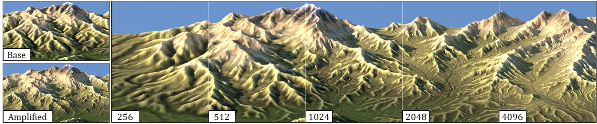

Axel Paris - Research Scientist
Home
Publications
Email
Twitter
Terrain Amplification using Multi-scale Erosion
May 1, 2024.

Preprint
PDF (soon)
Video
Code
Modeling high-resolution terrains is a perennial challenge in the creation
of virtual worlds. In this paper, we focus on the amplification of a lowresolution
input terrain into a high-resolution, hydrologically consistent
terrain featuring complex patterns by a multi-scale approach. Our framework
combines the best of both worlds, relying on physics-inspired erosion models
producing consistent erosion landmarks and introducing control at different
scales, thus bridging the gap between physics-based erosion simulations and
multi-scale procedural modeling. The method relies on a fast and accurate
approximation of different simulations, including thermal, stream power,
and hill slope erosion performed at different scales to obtain a range of
effects. Our approach provides landscape artists with tools for amplifying
mountain ranges and valleys with consistent details.
@article{Schott2024,
author = {Schott, Hugo and Galin, Eric and Gu\'{e}rin, Eric and Peytavie, Adrien and Paris, Axel},
title = {Terrain Amplification using Multi-scale Erosion},
year = {2024},
volume = {},
number = {},
journal = {ACM Trans. Graph.},
numpages = {}
}